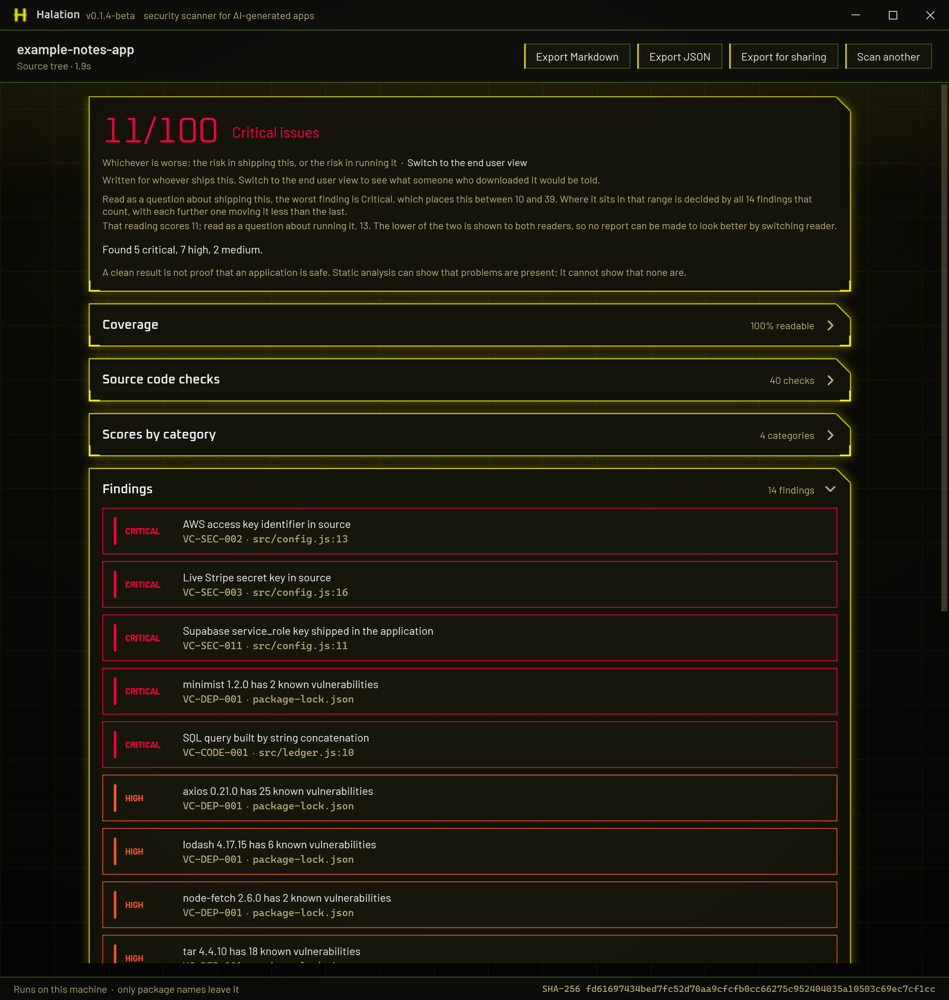
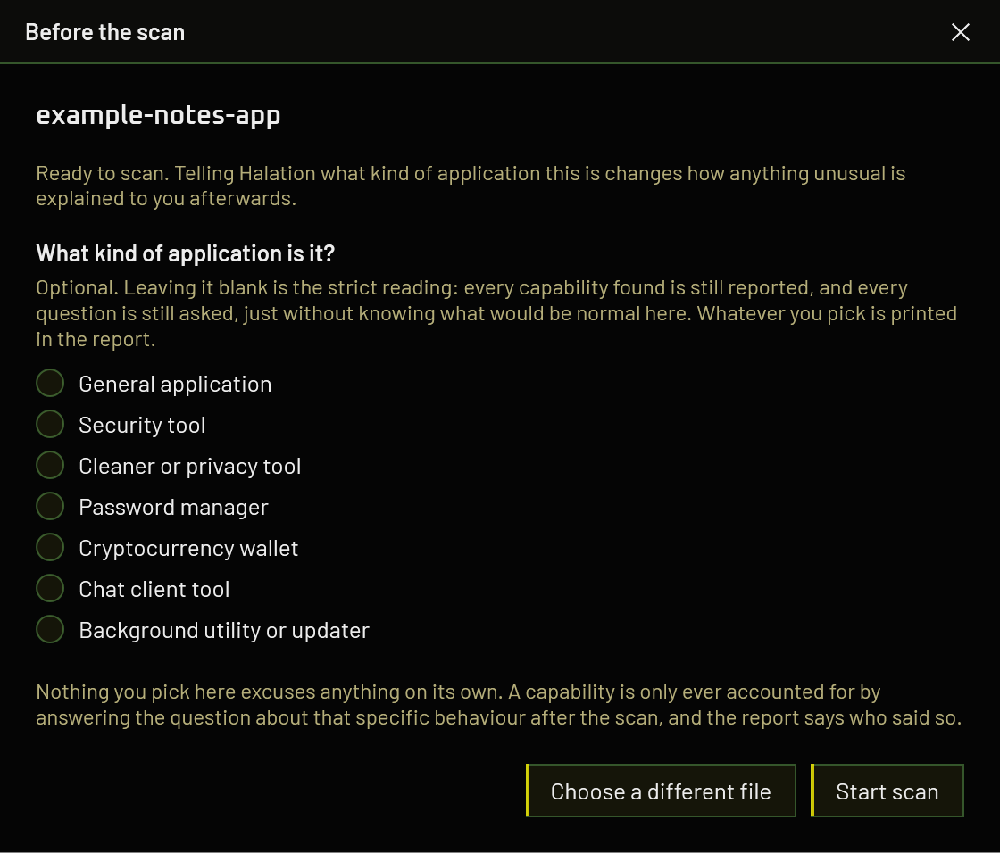

Shipped as a binary.
Read like source.
Drag any application in. Halation recovers what source it can, checks it against the failures AI code generators actually produce, and tells you what it could not reach.
An executable, an installed folder, a zip, or a source project
It reads the application, not the download page
Most tools that check a program look at what it says about itself. Halation takes the binary apart and reads the code inside it, then says how much of it it managed to reach.
| Artifact | Recovery | Depth |
|---|---|---|
| Source folder, zip, or repository | read directly | full |
| .NET executable or library | decompiled (ILSpy) | full, near-original C# |
| .NET single-file bundle | unpacked from memory, then decompiled | full |
Electron application or .asar | unpacked | full, often unminified |
| NSIS installer | unpacked, then as above | full for Electron and .NET payloads |
| Java archive | decompiled | good |
| Python bundle | readable modules only | partial, and said so |
| Native Windows binary | not possible | signing and hardening flags only |
Installers matter more than that table makes them look, because almost nothing is downloaded as a bare executable. An installer is a native stub with the application attached, so reading only the stub writes off everything worth checking. Nothing is executed and nothing is written to disk: the installer is read, never run.
It cannot say an application is safe
Static analysis can demonstrate that bad patterns are present. It can never demonstrate that none are, and a deliberately malicious application will read cleaner than a sloppy honest one. So Halation never prints a verdict of "safe", and the rest of the design exists to stop a reassuring-looking report undoing that.
The score is capped by the worst finding
Never averaged. Fifty passing checks cannot lift an application that ships a live API key out of the red band.
Coverage is separate from the score
A clean result at 12% coverage is a different claim from a clean result at 95%. Below 5% no score is produced at all.
A check that could not run is never reported as clean
Timed-out rules, unreachable advisory services and unreadable bundles are all listed as unchecked, in their own section rather than a footnote.
One number, and it is the harsher of two readings
Every artifact is scored both as a question about shipping it and as a question about running it, and the worse answer is the one both reports print. Otherwise an author could switch to the reader that treats them more kindly and screenshot that.
The number means the same thing in everybody's report
It comes from the deterministic checks alone. Whatever the optional AI pass finds is reported in full and never moves it, because a score that changed with whichever model you had configured could not be compared with anyone else's.
"Do not install" comes from evidence, not from a low score
Only a handful of high-confidence deterministic rules can raise it, and the AI pass never can.
A number, and everything behind it
A real scan of a small demonstration project: five hardcoded credentials and injection flaws of the kind a code generator writes without being asked, plus four dependencies with published advisories against the exact versions it pins.
The worst finding picks a band and the accumulated weight positions the score inside it, so each further finding moves the number less than the one before. Scores do not bottom out at zero: three criticals and forty of them are different situations, and zero would assert that nothing about the application is acceptable, which no static scan can know.
Coverage sits beside the number rather than inside it, and so does anything that could not be checked at all, because a clean line under a check that never ran is the one way a report can mislead while every figure in it is correct.

The same evidence answers two different questions
A committed private key is critical for whoever ships an application and close to nothing for whoever runs it, because it is the author's key. Shell-opening an unvalidated URL is the other way round. So the report answers one of two questions, chosen by the reader.
The risk in shipping this
Run your own application through it as a final check. AI-generated code has been measured at roughly 2.7 times the vulnerability rate of hand-written code, and the failures are predictable: keys committed to the bundle, row-level security left off, API routes with no authentication, dependencies years out of date. This report carries rule identifiers, advisory links, and how to fix each finding.
The risk in running it
Run something you downloaded through it. For Electron and .NET applications Halation recovers the real code from the shipped binary and reads that, rather than trusting the description on a download page. This report drops the identifiers and says what the application can do to the machine it lands on.
You downloaded something and want to know if it is safe to run. Pick
the second one and drop in whatever you downloaded: the installer, the .exe,
the zip. Halation opens it and reads what is inside. There is nothing to set up and
nothing to pay for.
You are building something and want it checked before you ship. Pick the first one and give it your source folder, not the build you just produced. The pattern checks read either equally well, but the optional AI pass is a far better instrument against real source, because decompiling a binary throws away every comment in it and the comments are usually where the author already explained why something that looks alarming is fine. Against one decompiled release, three findings from a frontier model were checked by hand and all three were wrong, each answered by a comment the decompiler had discarded.
Which findings appear, how they are worded, what can be done about them and what order they come in all change with the reader. The number does not, and the report states what both readings were.
A second opinion that reads the code
The main scan is free, needs no account, and sends nothing but package names. Optionally, a second pass reads the code and reasons about it, which is what catches the things a pattern cannot express: a guard that exists but is incomplete, whether untrusted input can actually reach a dangerous operation, two individually harmless pieces of code that are unsafe together.
The Claude Code you already have
Detected at startup, including the copy inside the Claude desktop app. Spends the allowance of the subscription you already pay for, and nothing is charged on top.
An Anthropic API key
Billed per token against credit you buy up front. A pass over a dozen files runs to a few cents, and the report prints the estimate with the tokens behind it.
Any OpenAI-compatible endpoint
Ten providers preset, or Ollama and LM Studio on your own machine, which is the one route where the files never leave the building at all. Running one on your own card is experimental: it has been measured on a single configuration, and the setup page says what that showed and what it still needs.
Findings from this pass are labelled, carry a confidence level, cannot move the score, and can never trigger a do-not-install verdict. The strongest claim in a report must not depend on whether the reader happened to have a key.
Setting up each route, step by step

Package names. That is the list.
The packages you declare
Names and versions go to OSV.dev to be matched against published advisories at the moment you scan, because a vulnerability database bundled into a release is out of date the day it ships. No source, no file contents, nothing identifying you. It can be switched off.
The files the deep pass reads
Off unless you tick it, per scan, to a provider you chose and pay for. At most 40 files, and the report lists exactly which ones were read and what answered.
Everything else
The application, its source, its file names, its hash, your report and anything about you or the machine. The analysis runs where the file already is.
One build. Everything unlocked.
No licence keys, no tiers, no account. MIT licensed, and the source is the whole tool rather than a wrapper around a service. For something people point at files they do not trust, being able to read it is part of the offer.
Windows 10 or 11 · one self-contained file · no runtime to install
All releases, including betas
Nothing is behind this and nothing will be. Halation is one person's work, and what it costs is time and the occasional certificate, so anything sent goes towards keeping it maintained rather than towards unlocking something you do not already have.
Every release so far is a beta and is meant to be treated as one. The deterministic checks, the score and the coverage figure are the settled part. The optional AI pass is newer, and running a model on your own machine is the least tested corner of it, measured on a single configuration so far. Reports from other hardware are the thing that moves it forward, and there is a place to post them.
Releases are also not yet code-signed, so Windows SmartScreen will warn when you download one. That is what stops Halation installing its own updates too: it holds itself to the rule it applies to everyone else, which is that a download is installed only when a signature validates.